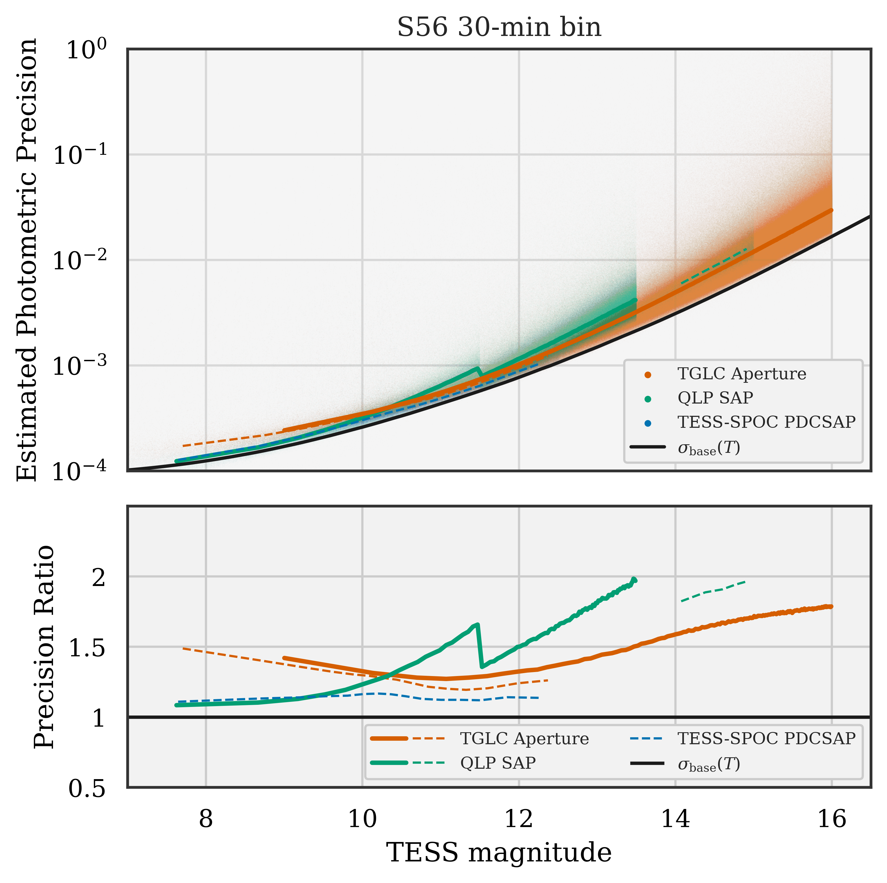
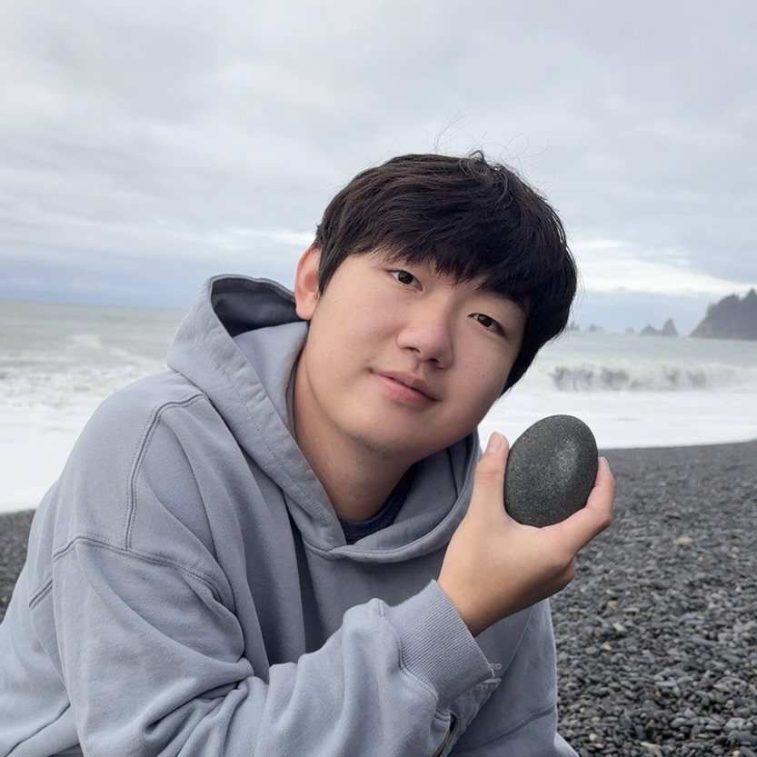
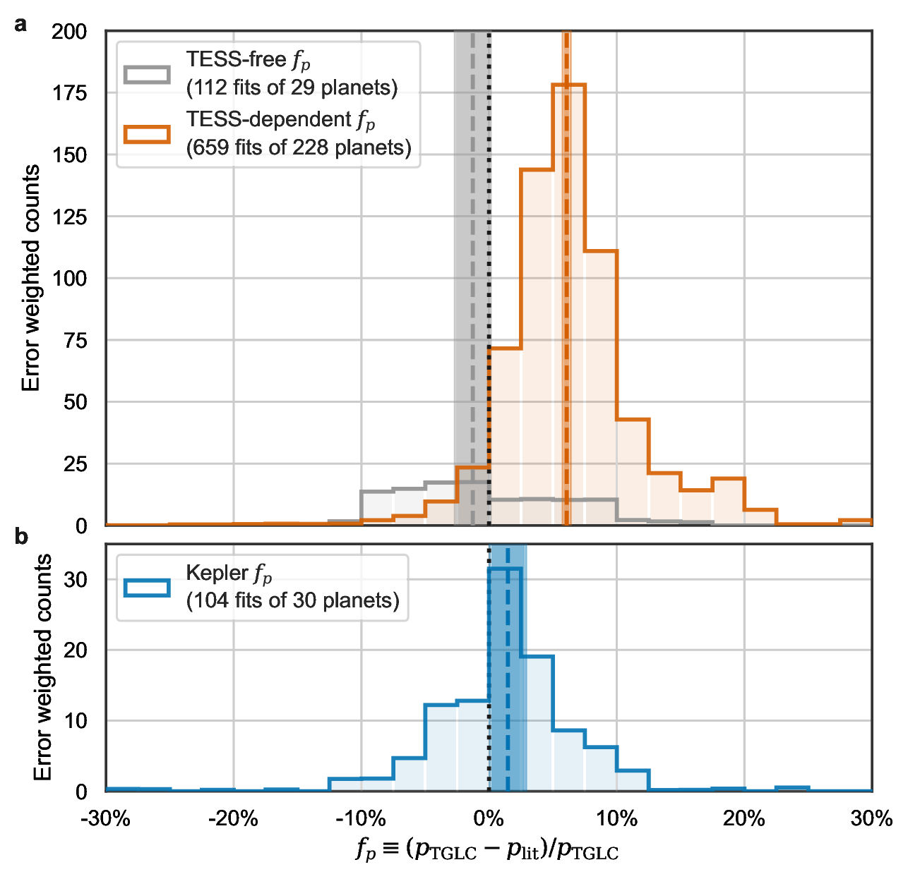
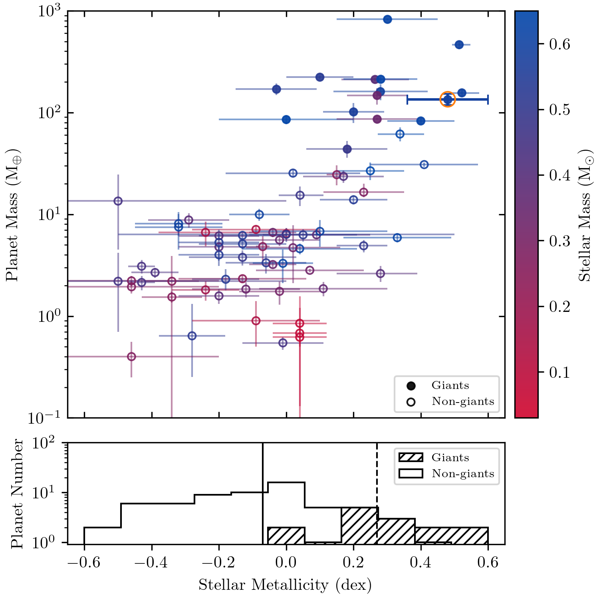

TESS–Gaia Light Curve: A PSF-based TESS FFI Light-curve Product
Turning raw TESS full-frame images into precision light curves—released as a MAST HLSP that now underpins community time-domain science.

Postdoctoral Associate at MIT, working in the TESS office at the Kavli Institute for Astrophysics and Space Research. I build surveys and data tools that reveal how planets grow around stars of every kind.
I’m an astronomer who loves turning huge, messy datasets into clear stories about planets and the stars they orbit. I build tools and methods that help uncover what standard surveys might overlook — from better TESS photometry to new ways of combining transits, radial velocities, and results from the GEMS survey.
I care about making data not just accurate, but useful — for myself and for the broader community. I like solving tricky problems, sharing what I learn, and building things that help others explore how planets form, evolve, and survive around some of the most extreme stars of the galaxy.
Building shared infrastructure for exoplanet discovery while chasing the most revealing planetary systems.

Turning raw TESS full-frame images into precision light curves—released as a MAST HLSP that now underpins community time-domain science.

Revealing a systematic radius bias in the TESS catalog by reanalyzing planets with TGLC light curves, revised stellar parameters, and updated inference.

Mapping giant planets around M dwarfs through the GEMS survey, highlighted by the TOI-5344 b discovery that probes formation across the lowest-mass stars.
Talks, papers, and signals I am excited about right now.
ApJL 2025: uncovering a systematic bias in measured radii using TGLC-informed modeling.
Early SURFSUP findings shared at CoolStars22 and Know Thy Star II, showcasing the youngest rotating systems.
Preparing the TESS White dwarf Investigation of Remnant pLanets to mine 200-s FFIs for post-main-sequence worlds with machine-learning vetting and TGLC photometry.
Prefer the full document? Grab the PDF directly, or open the sections below for quick context.
UC Santa Barbara
Advisor: Dr. Timothy Brandt
UC Santa Barbara
UC Santa Barbara
UC Irvine
Advisor: Dr. Paul Robertson
UC Irvine
UC Irvine
MIT
MIT Kavli Institute
Advisor: Dr. George Ricker
Have an idea, a dataset, or a mission concept? I would love to hear about it.
Email: tehan@mit.edu
Office: MIT Kavli Institute for Astrophysics and Space Research, Room 37-438N